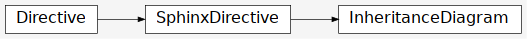

Pipeline Documentation
Pipeline Tasks
Generic Tasks |
|
Interferometry Generic Tasks |
|
Interferometry ALMA Tasks |
|
Interferometry VLA Tasks |
|
ALMA Single Dish Tasks |
|
Nobeyama Tasks |
|
The launcher module contains classes to initialize the pipeline, potentially from a saved context state. |

The launcher module contains classes to initialize the pipeline, potentially from a saved context state. |
Pipeline Heuristics
Releases etc.
Pipeline Basics
Task Classes
pipeline.hifa.tasks- Classes
- ALMAAntpos
- ALMAExportData
- ALMAImportData
- ALMAPhcorBandpass
- ALMARestoreData
- ALMATsysflag
- Bandpassflag
- BpSolint
- DiffGaincal
- FlagDeterALMA
- FlagTargetsALMA
- FluxcalFlag
- GaincalSnr
- GcorFluxscale
- Gfluxscaleflag
- ImagePreCheck
- LockRefAnt
- Polcal
- Polcalflag
- Renorm
- SessionALMAPhcorBandpass
- SessionGcorFluxscale
- SessionRefAnt
- SpwPhaseup
- Targetflag
- TimeGaincal
- TsysFlagContamination
- UnlockRefAnt
- Wvrgcal
- Wvrgcalflag
- Class Inheritance Diagram
- Classes
pipeline.hif.tasks- Classes
- Analyzealpha
- Antpos
- Bandpass
- BandpassMode
- ChannelBandpass
- CheckProductSize
- Correctedampflag
- Editimlist
- FindCont
- Fluxscale
- GSplineGaincal
- GTypeGaincal
- Gaincal
- GaincalMode
- IFApplycal
- KTypeGaincal
- Lowgainflag
- MakeImList
- MakeImages
- Makecutoutimages
- Makermsimages
- Mstransform
- PhcorBandpass
- Polarization
- PolcalWorker
- Rawflagchans
- RefAnt
- Selfcal
- SerialIFApplycal
- SerialRefAnt
- SetModels
- Setjy
- Tclean
- Transformimagedata
- UVcontSub
- Class Inheritance Diagram
- Classes
pipeline.hif- Pipeline Inheritance Diagrams
Developer Notes
- Ways to run the Pipeline
- Comparing pipeline executions
- Building the pipeline
- ALMA interferometry imaging workflow
- VLA interferometry imaging workflow
- VLASS-SE-CONT imaging workflow
- VLASS-SE-CUBE imaging workflow
- VLASS Selfcal & Restore workflows
- Pipeline testing
- DataType Testing
- Pipeline Quality Assurance (QA) Score Class Design
- Pipeline developer documentation
- Python 3 conversion notes
- Updating code with ‘2to3’ tool
- Examples best coding practices
- Print statements
- ‘has_key’ method in dictionaries
- Raising exceptions
- Catching exceptions
- Checking for type
- Relative imports within package
- Formatted strings
- “reduce” builtin is deprecated
- <> is deprecated, use !=
- Implicit tuple parameter unpacking is no longer supported
- map, filter, zip now return an iterable object, instead of a list
- Pipeline Recipes
Example Notes (from .rst)